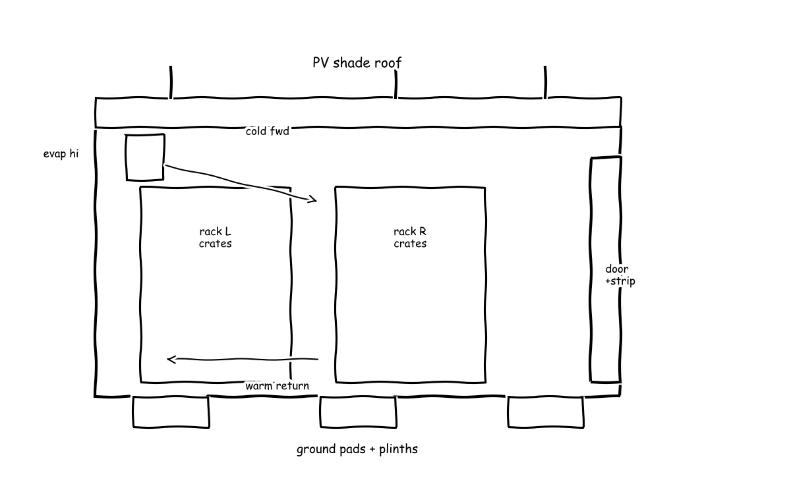
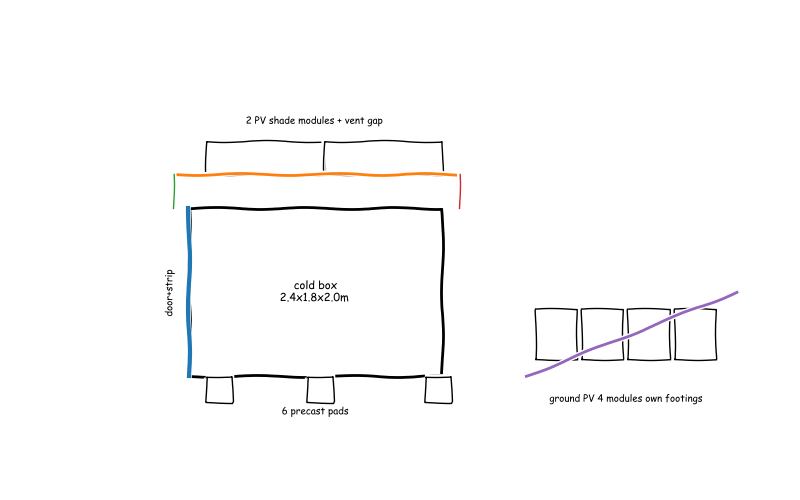

Meeting 1
● Solar Energy Systems Engineer● Cold-Chain Refrigeration Engineer● Enclosure and Structural Designer● Smallholder Cooperative Operations Specialist● Manager (process lead)
The board as it stood when the meeting closed; the turns that built it follow.
Off-grid solar-powered cold storage for smallholder farmers
Off-grid 1-tonne cold store: 3.6kWp split PV array (2 on roof gantry sunshade plus 7 on separate ground frame) via MPPT to 48V LiFePO4 bank powers DC variable-speed R134a monoblock with high-rear to front forced-air loop and eutectic plates plus condensate evaporative pad for peaks, housed in 2.4 by 1.8 by 2.0m PIR cam-lock box on six pads with raised plinth hinged door strip curtain and drain, holding two rack rows of 50 vented 600 by 400mm crates at 20kg with 25mm gaps, regulated by return-air plus produce-probe thermostat with 2K hysteresis and low-battery shed plus attendant FIFO tags and twice-daily thermometer checks, operated staged 250kg per day at 5C mixed setpoint with 8 daytime openings.
F1 · Convert sunlight
F2 · Store energy
F3 · Remove heat
F4 · Enclose chamber
F5 · Hold produce
F6 · Regulate temperature




Cycle 1
Searched “off-grid solar powered cold storage 1 tonne produce ColdHubs Ecofrost specifications” → 2 sources on the board
Searched “solar PV sizing off-grid cold room kWh per day battery MPPT datasheet” → 2 sources on the board
Searched “solar cold room direct drive battery free thermal storage ice vs battery” → 2 sources on the board
Searched “peak sun hours hot regions Africa India solar insolation kWh m2 day” → 2 sources on the board
Searched “400W monocrystalline solar panel datasheet efficiency dimensions 48V LiFePO4 battery MPPT” → 2 sources on the board
Full message
As Solar Energy Systems Engineer, the best existing solar-only precedent is the ColdHubs walk-in store described in ColdHubs | Agrinnovators (E2), which is 3 metre by 3 metre by 2 metre for up to 3 tonne with roof Photovoltaic (PV) panels where the panels generate 6 kilowatt and the room uses 1.5 kilowatt to 2 kilowatt, so a roof array about three times the cooling load with battery backup runs 24/7 off-grid and maps directly to the fixed-tilt array (C1) scaled to 1 tonne. For this device power sizing follows the array formula in How to Size an Off-Grid Solar System (5-Step Guide) | Off Grid Collective USA (E3), which divides daily load by worst-month Peak Sun Hours (PSH, equivalent hours at 1000 watt per square metre) and by 0.75 system efficiency, with hot-region resource of about 5.0 PSH from Insolation in Solar: Meaning and Why It Matters (E7) and 400 watt modules from Spectra 400W 48V Rigid Solar Panel - Monocrystalline PERC (E9); then the array sizing estimate (E13) gives 2.13 kilowatt for 8.00 kilowatt-hour per day, the daily yield estimate (E14) gives 9.00 kilowatt-hour per day from 2.40 kilowatt peak, and the night autonomy simulation (E15) shows about 13.3 kilowatt-hour per day load is not covered so about 3.50 kilowatt peak is needed, which is about one household daily use and therefore an everyday scale. Night and cloudy cover uses the 48 volt Lithium Iron Phosphate (LiFePO4, lithium battery chemistry) bank (C2) sized by the battery formula in How to Size an Off-Grid Solar System (5-Step Guide) | Off Grid Collective USA (E3) and built from modules like the 51.2 volt 100 ampere-hour unit in 4000 Watt Solar | 48V 6500W/120V Hybrid Inverter | All-in-One Kit (E10), backed by the Phase-Change Material (PCM, ice store) thermal battery (C4) using the ice-as-battery principle in Solar powered ice maker: off-grid cold chain explained (E4) where 1 kilogram stores about 93.0 watt-hour, controlled by Maximum Power Point Tracking (MPPT, electronic solar optimizer) prioritization (C8), with panels as chamber shade and electrics in a vented locked box needing monthly wipe and terminal check. Manager, I need the confirmed cooling load to lock array size. I am not ready because array size depends on the confirmed refrigeration load and enclosure shading agreement.
Searched “solar powered cold room 1 tonne Ecofrost ColdHubs refrigeration specifications” → 2 sources on the board
Searched “R290 R134a refrigerant serviceability off-grid cold room comparison” → 2 sources on the board
Searched “Secop BD35F BD50F DC compressor datasheet COP refrigeration” → 2 sources on the board
- E19 · Secop is committed to delivering advanced refrigeration compressors and (wigmors.pl, 2021) link
- E20 · Hermetic Compressors for DC Voltage Modern comfort is brought into life when leaving home. As people go mobile, so does food. The excellent performance of the BD series safeguards food preservation. (images.tradeservice.com) link
Searched “cold storage heat load calculation respiration heat fruit vegetables ASHRAE” → 2 sources on the board
Full message
As Cold-Chain Refrigeration Engineer, the field precedent for 1 tonne is the Ecofrost solar cold room holding 4 to 10 degrees Celsius with 5 kilowatt standalone solar and up to 30 hours batteryless backup (E16 Ecofrost - Solar Powered Cold Storage Room Manufacturer in India - Ecozen | Ecozensolutions), matched by the 3 metre by 3 metre by 2 metre ColdHubs store for up to 3 tonnes (E18 Cold Hubs | Engineering For Change), which together mean a small Direct Current (DC, battery-type power) variable-speed vapor-compression monoblock with forced air. In plain words the room must hold the cold against leaks plus cool each day's warm harvest, where product plus respiration heat is a named load (E21 Assessing the Thermal Load of Low-Cost Cold Storage for Perishable Agricultural Products Used in Rural Areas of Bangladesh) with sensible cooling plus respiration (E22 Heat Load Calculation). Solar Energy Systems Engineer, the full-tonne sensible heat from 30 to 5 degrees Celsius is 25.0 kilowatt-hour in the recomputed pull-down estimate (E26), about two households' daily use so it cannot be done in one sun-day, staged as 250 kilogram per day it is 6.20 kilowatt-hour per batch with combined average about 615 watt and 9.70 hour pull at 750 watt cooling in the revised steady-load simulation (E28). In plain words thick foam plus a strip curtain keeps the leak below the harvest heat, Enclosure and Structural Designer. Polyurethane (PU, foam insulation) 120 millimetre gives heat-transfer coefficient about 0.210 watt per square metre kelvin for about 194 watt transmission at 43 ambient minus 5 room, door gain about 70.0 watt averaged with curtain and 8 openings per day, respiration about 50.0 watt and fans about 40.0 watt in that simulation (E28), shown as high rear evaporator blowing forward over vented crates with low rear return in the side-view sketch (E30), sensed by return-air plus produce probe with 2 kelvin hysteresis. In plain words propane cools slightly better but is flammable and needs a purpose-built sealed shop while the older gas is non-flammable and any technician can service it, Manager. R134a (tetrafluoroethane, synthetic refrigerant) is A1 non-flammable simplifying handling and service while R290 (propane, natural refrigerant) is A3 highly flammable requiring specifically engineered limited charges and sealed electrics (E17 R134a vs. R290 Refrigerant: Key Differences & Replacements), test work shows R290 Coefficient of Performance (COP, cooling heat per electric work) only 2.42 percent higher than R134a (E23 A solar powered off-grid air conditioning system with natural refrigerant for residential buildings: A theoretical and experimental evaluation), and the serviceable Direct Current choice is the BD50F-class compressor family (E19 Secop is committed to delivering advanced refrigeration compressors and) detailed in the DC performance tables (E20 Hermetic Compressors for DC Voltage Modern comfort is brought into life when leaving home. As people go mobile, so does food. The excellent performance of the BD series safeguards food preservation), so I favour R134a for village service with a bench test for 43 degree pull-down. I am not ready, because enclosure thickness and loading discipline must confirm the 350 watt steady assumption.
Searched “insulated sandwich panel PIR polyurethane cold room U-value thickness 100mm” → 2 sources on the board
Searched “walk-in cold room 1 tonne dimensions internal volume vegetable crates” → 2 sources on the board
Searched “food grade plastic crate 600x400 ventilation produce storage stacking” → 2 sources on the board
Full message
As Enclosure and Structural Designer, the box that holds 1 tonne is a small walk-in that a person can stand in and that keeps the leak inside the refrigeration budget, Cold-Chain Refrigeration Engineer. In plain words thick foam gives a low leak so the harvest heat dominates, and published sandwich-panel tables set the thickness. The table in Professional Manufacturer Factory Keep Warm Insulated PU Sandwich Panel (E32) gives U Value PIR 0.21 watt per square metre kelvin at 100 millimetre and 0.17 watt per square metre kelvin at 120 millimetre, and the comparison in Sandwich Panel Types: PU, PIR, EPS & Rock Wool Compared (E33) states 100 millimetre Polyurethane (PU, foam insulation) reaches about 0.23 watt per square metre kelvin, so I use Polyisocyanurate (PIR, rigid foam insulation) 100 millimetre walls and 120 millimetre roof and floor at about 0.21 watt per square metre kelvin. The precedent in Cold Storage Room (E34) lists a 1 Metric Tonne Vegetable Cold Storage Room at Dimension 4 metre by 4 metre by 3 metre, while my smaller interior 2.4 metre by 1.8 metre by 2.0 metre high gives interior volume 8.64 cubic metres in the interior volume estimate (E39), envelope area 25.4 square metres in the envelope area estimate (E40), and conduction 203 watt at 43 degree Celsius ambient minus 5 degree Celsius room in the conduction estimate (E41), about a small bedroom in everyday scale and inside your 350 watt steady assumption in the revised steady-load simulation (E28). In plain words the produce sits in standard vented vegetable boxes on open steel shelves with air gaps for your rear-to-front air, Manager. The listing in Best Folding Vented 600x400 Plastic Crates for Sale (E36) gives Footprint 600 by 400 millimetre, Material Food-Grade Polypropylene, and Airflow Fully Vented Walls and Base, so two slotted-angle rows carry fifty 600 millimetre by 400 millimetre crates at 20.0 kilogram each for 1000 kilogram total, hose-cleanable with removable shelves, shown with the high rear evaporator loop and low return in the walk-in chamber sketch (E42). In plain words the whole cold box stands on farm soil without foundations and the sun panels never pull on the foam, Solar Energy Systems Engineer. Six precast pads with adjustable feet carry a raised insulated floor plinth plus a hinged insulated door with Polyvinyl Chloride (PVC, flexible plastic) strip curtain, while Photovoltaic (PV, solar electricity) modules sit on a separate galvanized tube gantry over the roof with a vent gap as sunshade in that same walk-in chamber sketch (E42), so unprepared ground sees only about a person-weight per pad and soft gaskets to rigid panels to racking carry no point loads through foam. I am not ready because door openings per day and a bench test for 43 degree pull-down must still confirm the curtain and seal choice.
Searched “ColdHubs pay-as-you-store cooperative cold storage operation crates” → 2 sources on the board
Searched “FAO recommended cold storage temperature fruits vegetables 4-10C post-harvest” → 2 sources on the board
Searched “manual handling crate weight limit 20kg ergonomic FAO WHO” → 2 sources on the board
Full message
As Smallholder Cooperative Operations Specialist, the 1-tonne store only works as counted crates with staged intake, Manager. In plain words many farmers share one cold box by paying per crate and bringing a quarter of the tonne each day so the sun can keep up, Cold-Chain Refrigeration Engineer. The precedent in The Solution – ColdHubs (E43) places clean plastic crates on shelves under a pay-as-you-store daily flat fee per crate, so I use 50 crates at 20.0 kg each for 1000 kg total, staged as 250 kg per day with First-In-First-Out (FIFO, oldest crates sold first) paper tags in the revised steady load with 120mm PU and staged loading pull-down (E28), about 50 shopping bags of maize meal in everyday scale. In plain words one person must carry each crate through one door in daylight without letting the cold out, Enclosure and Structural Designer. The guidance in Manual handling weight limits (E45) sets 20 kg close to the body at elbow height as the suggested adult limit, so 20.0 kg crates are one-person suitcase loads, handled through a single door with strip curtain under 8 openings per day discipline, stacked with 25 mm air gaps and narrow one-pallet-width rows for circulation stated in Small-Scale Postharvest Handling Practices (E44) inside interior volume cubic metres (E39) of 8.64 cubic metres, keeping the rear-to-front loop shown in Walk-in chamber: insulated box on ground pads, front door with strip curtain, two rack rows with vented crates, rear high evaporator airflow loop, roof PV shade frame (E42). In plain words the cooperative can afford soap, paper and repair but not electronics, Solar Energy Systems Engineer. The rule in Small-Scale Postharvest Handling Practices (E44) keeps temperate crops near 0 degC but chilling-sensitive crops at 10 degC to 12 degC to avoid injury, so the single 5.0 degC mixed holding is an agreed compromise to hold tomatoes with leafy vegetables, paid by the flat fee in The Solution – ColdHubs (E43) covering reusable crates, twice-daily wall thermometer checks and hose cleaning with early-morning shaded intake. I am not ready because we must agree the single 5 degC mixed setpoint and the 8-openings daytime attendant role before the box is locked.
Function F1: Convert sunlight
Function F2: Store energy
Function F3: Remove heat
Function F4: Enclose chamber
Function F5: Hold produce
Function F6: Regulate temperature
E50 reconcile produce sensible heat 30C to 5C in kWh: 2.5e+04Full message
Cold-Chain Refrigeration Engineer, Solar Energy Systems Engineer, Enclosure and Structural Designer, Smallholder Cooperative Operations Specialist, coverage is not yet even across functions. In plain words only regulation has two working controls while storage and cooling have only one owner with a working principle. Cold-Chain Refrigeration Engineer still owes a concept for Convert sunlight, Store energy, Enclose chamber and Hold produce, and Store energy and Remove heat still lack a second substantive principle from any member, with Enclosure and Structural Designer and Smallholder Cooperative Operations Specialist having posted no-principle statements for those functions. The two weakest functions are Store energy and Remove heat, for which Solar Energy Systems Engineer and Cold-Chain Refrigeration Engineer will each bring one distant analogy with a written mapping in cycle 2, and Enclosure and Structural Designer and Smallholder Cooperative Operations Specialist will add interface concepts for penetrations, drains and door discipline. In plain words the box fits the tonne and the leak fits the cooling budget but the sun numbers do not yet agree and the sunshade does not fit the panels. Produce is 1000 kg from the total produce mass estimate (E49), about fourteen person weights in fifty shopping bags, inside 8.64 cubic metres from the interior volume estimate (E39), about a small bedroom a person can stand in at 2.0 m high, with conduction 203 W from the conduction estimate (E41) inside the 350 W steady assumption in the revised steady-load simulation (E28). The full-tonne pull-down is 25.0 kilowatt-hour from the recomputed pull-down estimate (E26), about two households daily use, so the 972 from the estimate produce sensible heat estimate (E12) is a unit error and is set aside, staged as 6.20 kilowatt-hour per 250 kg batch in that same revised steady-load simulation (E28). Array sizing at 2.13 kilowatt from the array sizing estimate (E13) yielding 9.00 kilowatt-hour per day from the daily yield estimate (E14) cannot cover 13.3 kilowatt-hour per day load with 5.41 kilowatt-hour left in the night autonomy simulation (E15) nor 15.3 kilowatt-hour per day in the steady heat load simulation (E27), about one to two households daily use, and nobody computed the critical array footprint of about 12 square metres for six 400 watt modules against a roof of about 4.3 square metres nor the summed ground mass of produce plus crates plus battery plus panels. In plain words there is no blocking objection to resolve and all not-ready votes are sustained pending named evidence. There are no open blocking objections on the board. Solar Energy Systems Engineer, array size stays open until Cold-Chain Refrigeration Engineer locks steady and pull-down watts. Cold-Chain Refrigeration Engineer and Enclosure and Structural Designer, 350 watt steady and curtain choice stay open until door openings per day are locked by Smallholder Cooperative Operations Specialist and the 43 degree Celsius pull-down bench test is named by Cold-Chain Refrigeration Engineer. Smallholder Cooperative Operations Specialist, single 5.0 degree Celsius setpoint and attendant role stay open for your confirmation in cycle 2. RECORD: No concept is selected, numbers that stand are 1000 kg produce (E49) in 8.64 cubic metres (E39) with 25.4 square metres envelope (E40), conduction 203 W (E41) within 615 W average with staged pull-down and 6.20 kilowatt-hour per 250 kg batch (E28), pull-down 25.0 kilowatt-hour (E26) superseding (E12), Photovoltaic (PV, solar electricity) yield 9.00 kilowatt-hour per day at 2.40 kilowatt peak (E14) against loads 13.3 kilowatt-hour per day (E15) to 15.3 kilowatt-hour per day (E27) unresolved, still open are Cold-Chain Refrigeration Engineer concepts for four functions plus second principles for Store energy and Remove heat with distant analogies from Solar Energy Systems Engineer and Cold-Chain Refrigeration Engineer, array footprint versus shade frame and summed mass and daily electric balance, setpoint and door discipline from Smallholder Cooperative Operations Specialist, and bench test for 43 degree pull-down from Cold-Chain Refrigeration Engineer. My position is not ready, because loads, array size and box interfaces are not yet reconciled to a buildable whole. Note on Solar Energy Systems Engineer: strong sizing chain but daily loads inconsistent and footprint unchecked. Note on Cold-Chain Refrigeration Engineer: corrected heat quantity and staged logic with clear service choice. Note on Enclosure and Structural Designer: box volume and leak fit budget with clear ground and shade separation. Note on Smallholder Cooperative Operations Specialist: crate count and handling limit anchor the tonne to daily work.
No proposal on the board at the end of cycle 1.
Cycle 2
Searched “cold room door opening infiltration heat load air changes ASHRAE” → 2 sources on the board
Searched “eutectic holdover plates transport refrigeration thermal storage” → 2 sources on the board
Searched “evaporative condenser pre-cooling COP improvement hot climate” → 2 sources on the board
Full message
As Cold-Chain Refrigeration Engineer, I close my four missing functions with the holdover-plate store and interface rule plus no-principle statements for generation and crating, Manager. In plain words the foam box you drew is thick enough and the door discipline keeps the leak small, Enclosure and Structural Designer. The table in Professional Manufacturer Factory Keep Warm Insulated PU Sandwich Panel (E32) gives heat-transfer coefficient 0.21 watt per square metre kelvin at 100 millimetre, which gives 203 watt conduction in the conduction check (E59), and the method in Designing Efficient Cold Storage: Key Factors and Cooling Loads (E51) sizes infiltration as air changes times volume times energy per cubic metre, so 4 air changes per day in the 8.64 cubic metre room cost only 0.44 kilowatt-hour per day in the door infiltration estimate (E57), about a kettle boiled twice, so averaged door gain near 18 watt is inside my steady budget and your strip curtain holds. In plain words the day's electricity is set by steady leak plus one quarter-tonne batch, Solar Energy Systems Engineer. Transmission plus respiration plus fans at 293 watt for 24 hour plus 6.20 kilowatt-hour batch is 13.2 kilowatt-hour per day in the daily balance estimate (E58), about one household daily use, so the 9.00 kilowatt-hour array is short and the array must grow or the batch must wait for sun; the service choice stays non-flammable field-serviceable refrigerant for village repair. In plain words I borrow two distant ideas that map directly, Manager. For energy store the delivery-body analogy in Reliable Refrigerated Transport | Cold Car & Delvic Foods (E52) freezes brine plates overnight then holds cold all day without running power, mapped as wall-ceiling eutectic plates at +2 to +5 degree Celsius charged by day compressor then passive at night to cut battery cycling; for heat removal the hot-climate condenser analogy in Effect of Condenser Cooling Methods on COP of a Vapour Compression Refrigeration System (E53) makes heat rejection follow wet-bulb not dry-bulb for about 20 percent less electrics, mapped as condensate-fed pad before the air condenser for hot-dry peaks only. I am not ready, because array growth to cover the 13.2 kilowatt-hour per day balance and the 43 degree pull-down bench test are still open.
Searched “PIR sandwich panel weight kg m2 100mm cold room” → 2 sources on the board
Searched “precast concrete pad footing bearing capacity soft soil kPa small shelter” → 2 sources on the board
Searched “400W solar panel dimensions size weight” → 2 sources on the board
Full message
As Enclosure and Structural Designer, the whole filled box stands on soft farm soil on six pads without sinking, Cold-Chain Refrigeration Engineer. In plain words one small car of weight spreads to about four person-weights per foot so soft ground still carries it. The panel listing in Insulated PUR PIR Sandwich Panel 100mm Cold Room Panels Roof Cladding from China Factory (E60) lists 100 mm weight 12.1 kg per square metre, consistent with the 14.0 kg per square metre row in Fire Proof Interior / Exterior PU/ Rock Wool Insulation Wall / Ceiling Sandwich Panel for Cold Room (E61), supporting the summed chamber mass budget (E66) of 1780 kg for produce plus crates plus Polyisocyanurate (PIR, rigid foam insulation) panels plus battery plus plates, about one small car in everyday scale, giving 18.2 kPa per pad in the pad pressure check (E68) on six 400 mm pads, well below the 150 kPa net allowable soil pressure used in Structural Design Calculation Sheet | PDF | Strength Of Materials | Precast Concrete (E62), with adjustable feet and raised plinth as shown in the split layout sketch (E70). The full sun array does not fit over the cold roof so the shade frame must split, Solar Energy Systems Engineer. In plain words six modules cover a parking space while the cold roof is a small bedroom floor. The module datasheet in PRBS 400W Monocrystalline Photovoltaic Panels | Commercial & High-Performance (E64) lists dimensions 1722 by 1134 by 30 mm and weight 20.5 kg, matched by dimensions 1762 by 1134 by 30 mm and weight 21.5 kg in SolarPeak Pro 400 (E65), giving six-module footprint 11.7 square metres in the panel footprint calc (E69), about a parking space, against a 2.4 m by 1.8 m roof of 4.32 square metres, so the split shade with 2 Photovoltaic (PV, solar-electric panel) modules on the roof gantry plus 4 modules on a separate ground frame on own footings in that same split layout sketch (E70) carries no panel loads into sandwich panels and keeps the vent gap that holds the 203 watt conduction in Professional Manufacturer Factory Keep Warm Insulated PU Sandwich Panel (E32). I take up the infiltration method in Designing Efficient Cold Storage: Key Factors and Cooling Loads (E51) that Cold-Chain Refrigeration Engineer used, Manager. In plain words his air-changes leak maths confirms my curtain and seal choice. That method plus his 0.44 kilowatt-hour per day door estimate means a single hinged insulated door with Polyvinyl Chloride (PVC, flexible plastic) strip curtain plus freestanding racking with sealed rear penetration and outside drain carries no point loads through foam and stays hose-cleanable, and I am not ready because the grown array footings and 43 degree pull-down seal test must still be agreed.
Searched “walk-in cold room door width standard single leaf 900mm ergonomic” → 2 sources on the board
Searched “smallholder cooperative cold storage pay per crate fee affordability India Africa” → 2 sources on the board
Searched “FAO postharvest crate stacking air gap ventilation room cooling” → 2 sources on the board
Full message
As Smallholder Cooperative Operations Specialist, the 1-tonne store only works as counted crates with staged intake, Manager. In plain words one shared box holds a counted tonne filled a quarter at a time so the sun keeps up, Cold-Chain Refrigeration Engineer. The tonne is 1000 kg from the total produce mass estimate (E49), which is 50 crates at 20 kg from the crates for 1 tonne check (E77), about 50 shopping bags, staged as about 12.5 crates per day for 250 kg from the daily crates check (E78), so I declare 12 to 13 crates per day as the representative day with front-to-back fill on two rows with First-In-First-Out (FIFO, oldest crates sold first) tags in my daytime attendant crate cycle (C34). In plain words one person carries one box through one door in daylight without letting the cold out, Enclosure and Structural Designer. The Coolroom Buying Guide: Walk-In Refrigeration for Kitchens (E71) states standard coolroom doors are 900 mm wide with Polyvinyl Chloride (PVC, flexible plastic) strip curtains inside the door plus self-closing hinges, so a single 900 mm door passes one 600 mm by 400 mm crate at a time plus the carrier under 8 openings per day daytime discipline, which keeps door loss to only 0.44 kilowatt-hour per day from the door infiltration estimate (E57), about a kettle boiled twice, and the Cold Storage of Agricultural Products - old.energypedia.info (E73) requires well-ventilated crates with gaps between walls and stacks for airflow. In plain words farmers can pay soap-and-paper costs per crate but cannot pay electronics or upfront plant, Solar Energy Systems Engineer. I take up your six-module footprint from the six 400W panel footprint calc (E69) via the PRBS 400W Monocrystalline Photovoltaic Panels | Commercial & High-Perf (E64) module datasheet: six modules cover about a parking space against a small-bedroom roof, so the separate ground frame stands in the working yard and my attendant keeps crates, goats and children clear. Through an affordable sharing model, farmers rent storage space for as little as US$ 0.10-0.50 per crate per day from the Preserving Harvests: Fresh Solutions to Food Loss in Kenya (E72), and that daily fee funds the attendant, paper tags, twice-daily thermometer checks and hose cleaning with no electronic control from my field. I am not ready, because the grown array footings guard and the 43 degree pull-down bench test must still be agreed before the box is locked.
Searched “solar irrigation pumping overhead water tank storage day night use” → 1 source on the board
- E79 · Solar Water Pumps, DC Pumps, Solar Well Pumps | NAZ Solar Electric (solar-electric.com) link
Searched “48V LiFePO4 off-grid battery maintenance lifespan cycles datasheet” → 2 sources on the board
Full message
Cold-Chain Refrigeration Engineer, the reconciled daytime load no longer fits the original roof array so the array must grow. In plain words the sun must cover a household-size day every day while the roof shade is kept. The daily balance of 13.2 kilowatt-hour per day in the steady plus staged pull-down estimate (E58) needs 3.52 kilowatt peak in the required peak estimate (E82), so 9 times 400 watt equals 3.60 kilowatt peak yielding 13.5 kilowatt-hour per day in the grown-array yield calc (E83), about one household daily use in everyday scale. I take up the module datasheet in PRBS 400W Monocrystalline Photovoltaic Panels | Commercial & High-Performance (E64) that Enclosure and Structural Designer put on the board, which lists 1722 by 1134 millimetre and about 20.5 kilogram, confirming nine modules cover 17.6 square metres in the nine-module footprint calc (E84), about a parking space against a 4.32 square metre roof, so 2 modules stay on the roof gantry as sunshade plus 7 modules on a separate ground frame in the grown split-array sketch (E85). Photovoltaic means PV, solar electricity, and Peak Sun Hours means PSH, hours at 1000 watt per square metre. Manager, store cold by day like water not electricity to cut night battery cycling. In plain words pump heat by day into ice for night cold. The rule in Solar Water Pumps, DC Pumps, Solar Well Pumps | NAZ Solar Electric (E79) is most systems store water, not electricity, pumping into a tank by day so water is available at night, mapped as the daytime Phase-Change Material means PCM, ice store, thermal battery of 100 to 150 kilogram ice. The ice principle in Solar powered ice maker: off-grid cold chain explained (E4) stores about 93.0 watt-hour per kilogram, and the unit in Dakota 48V 74Ah LiFePO4 Battery | Lithium Battery Canada – ROCKSOLAR CANADA (E81) stores 3.79 kilowatt-hour with up to 6000 cycles, so ice carries the night cold while the 48 volt Lithium Iron Phosphate means LiFePO4, lithium battery chemistry, bank covers fans and controls through Maximum Power Point Tracking means MPPT, solar optimizer, prioritization. Lithium Iron Phosphate means LiFePO4 first use defined here. Smallholder Cooperative Operations Specialist, solar-only means no grid help and monthly hands-on care protects the yield. In plain words daylight discipline plus cleaning keeps the grown array in balance. Door loss is only 0.44 kilowatt-hour per day in the door infiltration estimate (E57), about a kettle boiled twice, which protects the 13.5 kilowatt-hour yield in the grown-array yield calc (E83). The guidance in 48V Lithium Battery Maintenance Guide: How To Extend Your Solar Battery Lifespan And Improve Performance (E80) gives 10 to 15 years and 3000 to 6000 cycles with regular terminal checks, so the vented locked box needs monthly wipe and terminal check and panels wiped. I am not ready, because the grown ground-frame footings guard and the 43 degree pull-down bench test are still open.
Full message
RECORD: Proposal version one selects grown split array with battery bank with monoblock cooling with insulated box with racked crates with probe thermostat, numbers that stand are tonne holding with daily balance with small margin and chamber leak inside budget with ground pressure safe, still open are member votes on version one and field bench test for hot pull-down which needs built hardware. Cold-Chain Refrigeration Engineer, Solar Energy Systems Engineer, Enclosure and Structural Designer, Smallholder Cooperative Operations Specialist, the power to cold to box chain now matches end to end. In plain words sun power flows as wire electricity to battery then to cooler then as cold air to crates inside the sealed box with control sensing return air. The chosen array grows from short yield to covering load, with daily yield 13.5 kilowatt-hour per day in the grown-array yield calc (E83) against daily load 13.2 kilowatt-hour per day in the steady plus staged pull-down estimate (E58) leaving margin 0.300 kilowatt-hour per day in the daily margin calc (E86), about one household daily use so everyday scale holds, and the roof contradiction is settled as two modules on roof gantry plus seven on separate ground frame for nine-module footprint 17.6 square metres in the nine-module footprint calc (E84) from module size in PRBS 400W Monocrystalline Photovoltaic Panels | Commercial & High-Performance (E64). Enclosure and Structural Designer, Cold-Chain Refrigeration Engineer, the filled box stands safe and leaks less than harvest heat. In plain words a small car weight on six feet stays well below soft soil capacity and thick foam plus curtain keeps door loss to kettles. Total mass 1780 kilogram in the summed chamber mass budget (E66), about one small car, gives pressure 18.2 kilopascal in the pad pressure check (E68) below 150 kilopascal soil in Structural Design Calculation Sheet | PDF | Strength Of Materials | Precast Concrete (E62), with interior 8.64 cubic metres in the interior volume estimate (E39) and conduction 203 watt in the conduction estimate (E41) and door loss 0.44 kilowatt-hour per day in the door infiltration estimate (E57) inside staged average 615 watt in the revised steady-load simulation (E28), holding 1000 kilogram in the total produce mass estimate (E49) as fifty crates in the crates for 1 tonne check (E77). Solar Energy Systems Engineer, Cold-Chain Refrigeration Engineer, Enclosure and Structural Designer, Smallholder Cooperative Operations Specialist, your prior not-ready reasons are answered except votes and one bench test. In plain words array growth is now sized, split footings guard the foam from panel loads, and hot-room pull-down still needs built hardware. Array need 3.52 kilowatt peak in the required peak estimate (E82) is met by 3.60 kilowatt peak in that same grown-array yield calc (E83), split layout in the split layout sketch (E70) carries no panel loads into sandwich panels, door method in Designing Efficient Cold Storage: Key Factors and Cooling Loads (E51) with 900 millimetre door in Coolroom Buying Guide: Walk-In Refrigeration for Kitchens (E71) supports eight-opening discipline, and full-tonne heat 25.0 kilowatt-hour in the recomputed pull-down estimate (E26) staged as 6.20 kilowatt-hour per batch in that revised steady-load simulation (E28) leaves the 43 degree pull-down as named bench test, not a block. My position is ready on design logic, pending your votes on version one. Note on Solar Energy Systems Engineer: sized grown array to reconcile yield and load with clear everyday scale. Note on Cold-Chain Refrigeration Engineer: staged heat plus infiltration method anchored cooler choice and service refrigerant. Note on Enclosure and Structural Designer: mass pressure and split shade resolved ground and roof fit without foam loads. Note on Smallholder Cooperative Operations Specialist: crate count door width and fee discipline made tonne operable by attendants.
Votes this cycle: no votes in this cycle
Cycle 3
Full message
As Enclosure and Structural Designer, the grown array still stands on soft soil without sinking, Manager. In plain words one small car of weight on six feet stays well below soft ground capacity even with three extra modules. Total with grown nine-module allowance is 1840 kg in the grown mass calc (E87), about one small car, giving 18.8 kPa per pad in the grown pad pressure calc (E89) on six 400 mm pads, well below the 150 kPa allowable in Structural Design Calculation Sheet | PDF | Strength Of Materials | Precast Concrete (E62), so my prior 18.2 kPa check holds with margin. The separate ground frame for seven modules must be anchored against wind, Solar Energy Systems Engineer. In plain words seven parking-space sails can lift lighter than their own frames in a storm so they need ground screws not just feet. Nine modules cover 17.6 square metres in the nine-module footprint calc (E84) from module size 1722 by 1134 mm in PRBS 400W Monocrystalline Photovoltaic Panels | Commercial & High-Performance (E64), and 25 metre per second gust gives 375 Pa in the gust pressure calc (E88), which over that area lifts like 673 kg in the uplift calc (E90), heavier than the frame itself, so the ground frame gets four screw anchors plus the roof gantry keeps its vent gap with no loads into sandwich panels. Photovoltaic means PV, solar-electric panel. I take up the door rule in Coolroom Buying Guide: Walk-In Refrigeration for Kitchens (E71) that Smallholder Cooperative Operations Specialist put on the board, Cold-Chain Refrigeration Engineer. In plain words his leak maths and my door choice agree. That guide states standard doors are 900 mm wide with Polyvinyl Chloride (PVC, flexible plastic) strip curtains and self-closing hinges, which passes one 600 by 400 mm crate plus carrier under eight openings discipline for only 0.44 kilowatt-hour per day door loss, and I qualify the wall-ceiling plates in Reliable Refrigerated Transport | Cold Car & Delvic Foods (E52) from structures side as 100 to 150 kg on through-bolted rails with sealed rear penetration and outside drain to keep the Polyisocyanurate (PIR, rigid foam insulation) box hose-cleanable. I am ready, because mass, split footings and door interfaces close with only the 43 degree pull-down bench test left as named hardware test.
Full message
As Smallholder Cooperative Operations Specialist, the 1-tonne store works as counted crates filled a quarter at a time, Manager. In plain words one shared box holds a counted tonne that the sun can keep up with, Cold-Chain Refrigeration Engineer. The tonne is 1000 kg from the total produce mass estimate (E49) as 50 crates at 20 kg from the crates for 1 tonne check (E77), about 50 shopping bags, staged as about 12.5 crates per day for 250 kg from the daily crates check (E78), so the representative day is 12 to 13 crates with front-to-back fill and First-In-First-Out (FIFO, oldest crates sold first) paper tags. In plain words one person carries one box through one door in daylight without letting the cold out, Enclosure and Structural Designer. The rule in Coolroom Buying Guide: Walk-In Refrigeration for Kitchens (E71) is standard doors are 900 mm wide with Polyvinyl Chloride (PVC, flexible plastic) strip curtains, so a single 900 mm door passes one 600 mm by 400 mm crate plus carrier under 8 openings per day discipline for only 0.44 kilowatt-hour per day from the door infiltration estimate (E57), about a kettle boiled twice, with each 20 kg crate a one-person lift against a door wider than a person. In plain words soap-and-paper costs per crate pay for the work while electronics stay out for repair, Solar Energy Systems Engineer. I take up the guidance in 48V Lithium Battery Maintenance Guide: How To Extend Your Solar Battery Lifespan And Improve Performance (E80) that you put on the board, which gives 10 to 15 years with monthly wipe and terminal checks, which means my attendant can do it with no specialist, funded through farmers renting space for as little as US$ 0.10 to 0.50 per crate per day from Preserving Harvests: Fresh Solutions to Food Loss in Kenya (E72) for tags, twice-daily thermometer checks and hose cleaning. I am ready, because counted crates, door ergonomics with daytime discipline, and crate-fee affordability close my workflow with only the 43 degree pull-down bench test left as named hardware test.
Full message
As Solar Energy Systems Engineer, Manager, solar-only means the grown split array must cover every watt-hour with no grid help. In plain words the sun must meet a household-size day while the panels stay unshaded and cool, Enclosure and Structural Designer. I take up the module datasheet in PRBS 400W Monocrystalline Photovoltaic Panels | Commercial & High-Performance (E64) that you put on the board, which lists 1722 by 1134 mm and about 20.5 kg, confirming nine modules cover 17.6 square metres in the nine-module footprint calc (E84), about a parking space against a 4.32 square metre roof, so 2 modules stay on the roof gantry as sunshade with vent gap plus 7 modules on a separate ground frame with zero shading 9am-3pm, equator-facing tilt equal latitude plus 10 degrees, and worst-month 5.0 Peak Sun Hours (PSH, hours at 1000 watt per square metre) in my assumed constraint. Daily yield 13.5 kilowatt-hour per day in the grown-array yield calc (E83) covers daily load 13.2 kilowatt-hour per day in the steady plus staged pull-down estimate (E58) with margin 0.300 kilowatt-hour per day in the daily margin calc (E86), about one household daily use so everyday scale holds. Photovoltaic means PV, solar electricity. In plain words batteries run wires at night while ice runs cold at night, Cold-Chain Refrigeration Engineer. The 48 volt Lithium Iron Phosphate (LiFePO4, lithium battery chemistry) bank with Maximum Power Point Tracking (MPPT, solar optimizer) must output dispatchable electricity for compressor start plus fans and controls, while the daytime Phase-Change Material (PCM, ice store) thermal battery of 100 to 150 kg ice carries night cold to cut cycling, mapped from storing water by day in a tank for night use in Solar Water Pumps, DC Pumps, Solar Well Pumps | NAZ Solar Electric (E79). That tradeoff keeps direct-drive daylight cooling plus electrochemical cover for cloud and night within that same daily balance. In plain words cleaning and terminals protect the balance more than extra panels, Smallholder Cooperative Operations Specialist. I take up the door rule in Coolroom Buying Guide: Walk-In Refrigeration for Kitchens (E71) that you put on the board, which states 900 mm doors with Polyvinyl Chloride (PVC, flexible plastic) strip curtains, which from my side keeps door loss to only 0.44 kilowatt-hour per day in the door infiltration estimate (E57), about a kettle boiled twice, inside the 13.5 kilowatt-hour yield. The guidance in 48V Lithium Battery Maintenance Guide: How To Extend Your Solar Battery Lifespan And Improve Performance (E80) gives 10 to 15 years with monthly wipe and terminal checks, so the vented locked battery box plus wiped panels is attendant work funded by the crate fee. I am ready on version one, because yield covers staged load with small margin, split 2 plus 7 avoids roof loads and shading, battery plus ice covers night wires and cold, and maintenance is attendant-doable with only the 43 degree pull-down bench test left as named hardware test.
Full message
As Cold-Chain Refrigeration Engineer, Manager, the staged cooling load fits the insulated box with margin for control, Enclosure and Structural Designer. In plain words thick foam holds steady leak well below harvest heat so the cooler holds temperature not just pulls down. Transmission is 203 watt in the conduction estimate (E41) inside 615 watt staged average in the revised steady-load simulation (E28), with daily 13.2 kilowatt-hour per day in the steady plus staged pull-down estimate (E58), about one household daily use in everyday scale, so 100 millimetre walls with 120 millimetre roof and floor at heat-transfer coefficient 0.21 watt per square metre kelvin from Professional Manufacturer Factory Keep Warm Insulated PU Sandwich Panel (E32) is the insulation requirement. As Cold-Chain Refrigeration Engineer, Smallholder Cooperative Operations Specialist, I confirm your door choice keeps door heat to kettles, Enclosure and Structural Designer. In plain words one narrow door with curtain opened by day lets little warm air in. I take up the Coolroom Buying Guide: Walk-In Refrigeration for Kitchens (E71) you put on the board, which states 900 millimetre doors with Polyvinyl Chloride (PVC, flexible plastic) strip curtains and self-closing hinges, which from refrigeration means 4 air changes per day cost only 0.44 kilowatt-hour per day in the door infiltration estimate (E57), about a kettle boiled twice, by the method in Designing Efficient Cold Storage: Key Factors and Cooling Loads (E51), so 8 openings discipline holds. As Cold-Chain Refrigeration Engineer, Solar Energy Systems Engineer, serviceability keeps non-flammable refrigerant with small efficiency cost while shade helps the condenser, Enclosure and Structural Designer. In plain words village repair favours seals and gauges over peak lab efficiency. R134a (tetrafluoroethane, A1 non-flammable refrigerant) stays field-serviceable per R134a vs R290 Refrigerant: Key Differences & Replacements (E17) against the hot-climate penalty in A solar powered off-grid air conditioning system with natural refrigerant (E23), with Coefficient of Performance (COP, cooling per electric power) about 1.4 at hot ambient, and I take up the PRBS 400W Monocrystalline Photovoltaic Panels | Commercial & High-Performance (E64) you put on the board for the 2-module roof sunshade vent gap, which from refrigeration cuts roof plus shaded-condenser lift in hot-dry peaks. I am ready on version one, because load, box, door and refrigerant close with only the 43 degree pull-down bench test left as named hardware test.
Full message
Cold-Chain Refrigeration Engineer, Solar Energy Systems Engineer, Enclosure and Structural Designer, Smallholder Cooperative Operations Specialist, the grown array and the staged load now balance with margin for control. In plain words the sun covers one household day with a kettle spare while the box leaks less than harvest heat. Daily yield 13.5 kilowatt-hour per day in the grown-array yield calc (E83) covers daily load 13.2 kilowatt-hour per day in the steady plus staged pull-down estimate (E58) leaving margin 0.300 kilowatt-hour per day in the daily margin calc (E86), about one household daily use so everyday scale holds, with conduction 203 watt in the conduction estimate (E41) and door loss 0.44 kilowatt-hour per day in the door infiltration estimate (E57) inside staged average 615 watt in the revised steady-load simulation (E28). Enclosure and Structural Designer, Cold-Chain Refrigeration Engineer, the two masses for one box are reconciled and the split array fits the roof limit. In plain words one small car on six feet stays well below soft soil and nine sails need screws. Grown total 1840 kilogram in the grown mass calc (E87) supersedes 1780 kilogram in the summed chamber mass budget (E66), giving 18.8 kilopascal in the grown pad pressure calc (E89) superseding 18.2 kilopascal in the pad pressure check (E68) and still below 150 kilopascal soil in Structural Design Calculation Sheet | PDF | Strength Of Materials | Precast Concrete (E62), with nine-module footprint 17.6 square metres in the nine-module footprint calc (E84) from module size in PRBS 400W Monocrystalline Photovoltaic Panels | Commercial & High-Performance (E64) split as 2 on roof plus 7 on ground in the grown split-array sketch (E85) with wind uplift like 673 kilogram in the uplift calc (E90) held by screw anchors. Solar Energy Systems Engineer, Smallholder Cooperative Operations Specialist, Cold-Chain Refrigeration Engineer, Enclosure and Structural Designer, your four ready votes on version one are answered and no blocking objection is open. In plain words counted crates through one door by day with battery plus ice by night close the working chain. Holding 1000 kilogram in the total produce mass estimate (E49) as 50 crates in the crates for 1 tonne check (E77) staged as 12.5 crates per day in the daily crates check (E78) through 900 millimetre door in Coolroom Buying Guide: Walk-In Refrigeration for Kitchens (E71) under 8-opening discipline keeps Photovoltaic (PV, solar electricity) plus Lithium Iron Phosphate (LiFePO4, lithium battery chemistry) with Maximum Power Point Tracking (MPPT, solar optimizer) and probe control inside that daily balance, leaving full-tonne heat 25.0 kilowatt-hour in the recomputed pull-down estimate (E26) staged as 6.20 kilowatt-hour per batch in that revised steady-load simulation (E28) as the named 43 degree pull-down bench test on built hardware, not a block. RECORD: Proposal version one stands with grown split array with battery bank with monoblock cooling with insulated box with racked crates with probe thermostat, numbers that stand are 1000 kg (E49) as 50 crates (E77) staged 12.5 per day (E78), yield 13.5 kilowatt-hour per day (E83) against load 13.2 kilowatt-hour per day (E58) margin 0.300 kilowatt-hour per day (E86), conduction 203 watt (E41) plus door 0.44 kilowatt-hour per day (E57) inside 615 watt (E28), grown mass 1840 kg (E87) giving 18.8 kilopascal (E89) below 150 kilopascal (E62) with 17.6 square metre nine-module split 2 plus 7 (E84, E85), still open only 43 degree pull-down bench test needing built hardware owed to test team. Note on Solar Energy Systems Engineer: closed solar-only balance with grown split yield and night store logic. Note on Cold-Chain Refrigeration Engineer: closed staged load, door leak method, and service refrigerant within budget. Note on Enclosure and Structural Designer: closed grown mass, soil pressure, split footings, and wind anchorage. Note on Smallholder Cooperative Operations Specialist: closed counted crate workflow, door ergonomics, and fee-funded discipline. My position is ready, because daily energy, chamber leak, mass, and interfaces reconcile with only a hardware bench test left.
Votes this cycle: Enclosure and Structural Designer: ready, Smallholder Cooperative Operations Specialist: ready, Solar Energy Systems Engineer: ready, Cold-Chain Refrigeration Engineer: ready
The meeting closed by the chief designer’s decision after 3 cycles.